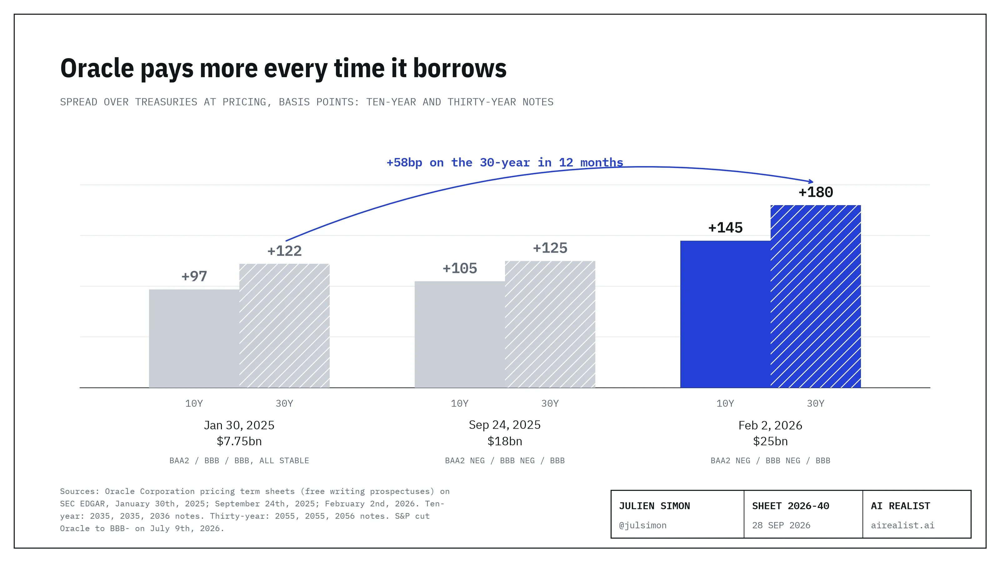

On September 24th, 2026, Bloomberg reported that Oracle had sent a force majeure notice to Stack Infrastructure, the Blue Owl company building Project Jupiter, a 2.45-gigawatt Stargate campus in the New Mexico desert [1]. Reuters had its own source and the same reason: “potential delays in securing power for the project” [1]. Force majeure is the clause companies invoke, in Reuters’s words, when “problems arise beyond their control”: war, flood, the occasional act of God. I read Oracle’s filings from this summer. Power was in the risk factors.
Oracle told CNBC: “Project Jupiter remains on our planned schedule.” Blue Owl told CNBC: “This notice does not change the financial commitments to this multi-year project” [1]. So a notice nobody will describe, about a delay nobody admits, changes nothing. Officially.
God, in chronological order
OnMarch 20th, New Mexico’s land commissioner refused to let the campus’s gas pipeline cross state trust land [2]. OnApril 13th, federal staff protested the pipeline because Transwestern, its builder, had not filed a historic-preservation finding [2]. OnApril 27th, Oracle announced fuel cells for Jupiter and wrote that “construction continues to move forward on schedule”, adding that “Oracle will continue to bear all energy costs for Project Jupiter” [3]. OnJune 22nd, its annual report told investors: “We have faced, and may continue to face, challenges with securing reliable and cost-effective power sources” [4]. OnJuly 14th, the commissioner said no again: “Advancing the massive use of gas for a project of this scale is simply not in the best interest of the trust” [2]. The finding had not been filed by the deadline, and onJuly 24ththe federal regulator took the pipeline off its fast track, with other agencies’ decisions under federal authority due by December 3rd [2]. OnSeptember 10th, asked about potential delays in New Mexico and Wisconsin, Oracle’s co-chief executive Clay Magouyrk said that a plan relying on “100% achievement of every one of their deliverables” is “called a bad plan”, and that the data center was “definitely on track” [5].Two weeks later: force majeure.
A government saying no is the kind of event many force majeure clauses list, and nobody outside the deal has read this one. But Reuters’s source adds a detail: “securing power for the site is Oracle’s responsibility under the contract” [6]. If the event is the land office’s refusal, which no one has confirmed, then the act of God is a letter from a land commissioner about a job that the contract reportedly gives to Oracle, a risk Oracle disclosed in its annual report. God, it turns out, has letterhead.
What the notice buys
According to the same Reuters source, Blue Owl has about $3 billion of equity in Jupiter, earns 9% on it while the campus is being built and expects about 11% once it is finished, and force majeure “extends the period during which it pays Blue Owl the lower development-stage rent” [6]. Oracle, by the same account, is responsible for the debt costs and “cannot terminate the lease under any circumstances” [6]. The two points of yield on Blue Owl’s equity come to about $60 million, deferred rather than lost, for each year of delay, or less than five hours of what Oracle spent on capex last quarter [6][7]. The act of God comes with a payment plan.
If you lend to data centers, look at the $288 billion in Oracle leases that have not yet started, “generally expected to commence between the second quarter of fiscal 2027 and fiscal 2029 and for terms of fifteen to nineteen years” [7]. Nobody outside those deals has read their clauses. The notice shows how this tenant reads one. Two questions for the next lease: does the clause exclude risks the tenant has already disclosed, and who carries the power obligation?
We said so, mostly
In “Cloud vs. Clout” we wrote that “Oracle is shifting capital risk to its counterparties” [8]. In “Welcome to Hotel Abilene” we argued that nobody in the Stargate web could check out. We had the direction wrong: the tenant is the one invoking the clause, and the landlord is the one waiting. In May, “The $500 Billion Umbrella” set a test for any Stargate deal: “a site under construction, a power purchase agreement in force, and a builder whose balance sheet can finish the job. Anything less is a press release” [8]. Jupiter has the site. Its power has a fuel-cell announcement from April 27th and a gas line the state refused and then refused to reconsider.
On February 1st, Oracle said it did “not expect to issue additional bonds during calendar year 2026”, a plan that “reflects Oracle’s commitment to maintaining an investment-grade rating” [9]. The same document put about half the money into equity, and Oracle delivered $5 billion in mandatory convertible preferred that week and $19.9 billion in stock over the summer [10]. S&P cut it to BBB-, one notch above junk, on July 9th [11]. The plan was kept. So was the investment-grade rating, by one notch.
The bill comes back
Oracle’s pricing sheets show what it paid over Treasuries at each bond sale since January 2025 [9]:

Ten-year: 97 basis points to 145. Thirty-year: 122 to 180. That last bond, the 2056 note, has not held up: on September 28th, Bloomberg data reported by ZeroHedge showed it at 82.4 cents on the dollar and 273 basis points over Treasuries, compared with 180 at pricing [12]. Oracle’s five-year protection cost about 200 basis points in late July, compared with about 93 for Meta and about 53 for the investment-grade index [13], and reached a record of about 227 in the week of the notice [13]. In fairness, that was when the ten-year Treasury yield hit a 19-year high, and every hyperscaler’s spreads widened [13]. Oracle just widened from a higher floor.
Has anyone climbed out of a spread like this? Boeing, whose default swaps hit 488 basis points in March 2020, a price Bloomberg read as 31% odds of default within five years, is still rated investment grade by all three agencies [14]. Others did not: Enron was downgraded to junk status four days before it filed for bankruptcy, and Lehman remained in the A category until it failed [14]. Oracle’s exposure is in its filings. My read: that is the kind of problem a company pays for rather than dies of, and the payment is the chart above.
S&P already adds Oracle’s $260 billion of lease commitments to the debt in its forecast, puts leverage “in the mid-4x area in fiscal 2027”, and says it could cut again if it expects Oracle “to sustain leverage exceeding 4.5x” [11]. The forecast sits at the edge of the trigger.
Oracle’s own annual report says a downgrade could “affect the terms or availability of certain long-term commitments (including data center leases)” [15]. One more S&P notch would not, by itself, push Oracle’s bonds out of the main index, which uses the middle of three ratings: Moody’s (Baa2, negative) and Fitch (BBB) each sat two notches above junk at Oracle’s last bond sale [16].
But every notch raises the price of the next dollar, and Oracle needs a lot of dollars, as do landlords like Jupiter’s, who borrow against its name. The Financial Times reports Jupiter’s loans quoted at 89 to 91 cents on the dollar [17]. At those prices, the roughly $18 billion banks reportedly lent would be marked $1.6 billion to $2 billion below par, by my calculation [17].
So the notice moves risk. A few tens of millions a year of it is deferred on Blue Owl’s equity. The rest, over time, lands on Oracle’s credit: Oracle will pay for it in new-issue spreads when it next borrows, and whoever lends to it bears the risk.
Oracle’s case
Michael Egbert, an Oracle vice president, wrote to The Santa Fe New Mexican that “force-majeure notices are commonplace in developments of this scale and are often used to preserve contractual rights among project partners,” and that they “do not, by themselves, establish a project delay or change delivery expectations” [18]. That is true of many notices: a tenant facing a permit fight it does not control is doing what counsel advises. And no, Larry Ellison’s pledged shares are a separate matter: Oracle’s proxy says those loans fund only “outside personal business ventures” [19].
What would prove me wrong
Two dates and a sentence, all public. New Mexico’s decision on the fuel-cell air permit, due by November 23rd; other agencies’ pipeline decisions under federal authority, due by December 3rd [2]; and Oracle or Blue Owl saying on the record that Jupiter’s lease has started on time. If all three go Jupiter’s way, the notice was mostly paperwork, and I will say so.
Until then, the act of God has a letterhead and a docket number: CP26-80.
Notes
[1] Bloomberg, “Oracle Cites Force Majeure to Shield Itself on Big Data Center“, September 24th, 2026, citing “people familiar with the situation”. Independent report: Reuters, same day, viaKSL: “Oracle issued a “force majeure” notice to a Blue Owl unit … citing potential delays in securing power for the project, a person familiar with the matter told Reuters”. Blue Owl, per Reuters, “owns the data-center developer Stack Infrastructure”. CNBC “confirmed” the recipient was a Blue Owl unit. Company statements toCNBC, September 24th, 2026. Neither company has confirmed the notice on the record; Blue Owl’s statement refers to “this notice”. Reported, not confirmed. Captured: sources/2026-09-24-oracle-force-majeure-project-jupiter-blue-owl.md.
[2] New Mexico State Land Office,letter of July 14th, 2026denying reconsideration (first denial by letters of March 20th, 2026), andpress release of July 15th, 2026. Federal Energy Regulatory Commission, docket CP26-80-000,Federal Register, July 29th, 2026: the prior notice request “will proceed as an application for case-specific authorization”; “90-day Federal Authorization Decision Deadline--December 3, 2026”. Same notice: “On April 13, 2026, Commission staff protested the prior notice request because Transwestern did not provide a copy of a finding by the New Mexico State Historic Preservation Office”; “Transwestern did not file the documentation by the deadline (or subsequently)”. NMED air permit deadline of November 23rd perTechCrunch.
[3] Oracle, “Oracle, BorderPlex and Bloom Energy to Power Project Jupiter with Cleaner, Water-Efficient Fuel Cell Technology“, April 27th, 2026: “Construction continues to move forward on schedule.”; “Oracle will continue to bear all energy costs for Project Jupiter”.
[4] Oracle Corporation,Form 10-K for fiscal 2026, filed June 22nd, 2026, risk factors: “we depend on third parties to develop and deliver certain data center capacity and related infrastructure, and their inability to obtain financing, complete construction on schedule or manage construction cost overruns could delay the availability of data center space or increase our costs. We have faced, and may continue to face, challenges with securing reliable and cost-effective power sources”. Neither the 10-K nor the10-Qmentions force majeure, Jupiter or New Mexico.
[5] Oracle co-chief executive Clay Magouyrk on the September 10th, 2026 earnings call, as reported by theAlbuquerque Journal, September 24th, 2026: “anyone that’s been in the business of doing construction or large-scale infrastructure development, if their plan relies on 100% achievement of every one of their deliverables, we have a term for that: It’s called a bad plan.” “We’re making very good progress in terms of construction, (the) data center is definitely on track.” The Journal: “Pressed by an analyst about potential data center delays in New Mexico and Wisconsin”. Same passage in thecall transcript(Motley Fool, machine-style): “we do not assume 100% of everything is going to work all the time. And we have backup options for those things”; “We are going through the process of acquiring our air permit.”
[6] Reuters viaKSL, September 24th, 2026, one person familiar with the matter: “The source said that securing power for the site is Oracle’s responsibility under the contract. Oracle cannot terminate the lease under any circumstances”; “with Oracle responsible for paying the debt costs”; “During the development stage, Blue Owl earns a 9% yield on its equity … upon completion of the project, the levered yield is expected to be around 11%. By invoking force majeure, Oracle extends the period during which it pays Blue Owl the lower development-stage rent.” “Blue Owl will still receive the higher rent for the originally planned duration, but its start will be delayed.” Force majeure, per Reuters, is invoked “when problems arise beyond their control”. William Blair, in the same Reuters report: “fiscal 2027 should not be affected, since Jupiter contributes no revenue this year.” Reported, not confirmed. Two points of yield on the equity, in billions of dollars a year. Author’s calculation: 0.02 × 3 = 0.06. Hours of last quarter’s capex (quarter of 92 days). Author’s calculation: 0.06 ÷ 28.499 × 92 × 24 ≈ 4.6.
[7] Oracle Corporation,Form 10-Q for the quarter ended August 31st, 2026, filed September 11th, 2026: “As of August 31, 2026, we had $288 billion of additional lease commitments, substantially all related to data center arrangements, that are generally expected to commence between the second quarter of fiscal 2027 and fiscal 2029 and for terms of fifteen to nineteen years that were not reflected on our condensed consolidated balance sheets”. Capital expenditures of $28.5 billion in the quarter. The same commitments stood at $260 billion three months earlier: Oracle10-K for fiscal 2026, “As of May 31, 2026, we had $260 billion of additional lease commitments”. Captured: sources/2026-09-11-oracle-q1-fy27-10q-288bn-uncommenced-leases.md.
[8] The AI Realist: “Cloud vs. Clout“, March 11th, 2026; “Welcome to Hotel Abilene“, March 8th, 2026; “The $500 Billion Umbrella“, May 6th, 2026.
[9] Oracle pricing term sheets on EDGAR:January 30th, 2025(5.500% notes due 2035 at +97 basis points; 6.000% due 2055 at +122),September 24th, 2025(5.200% due 2035 at +105; 5.950% due 2055 at +125),February 2nd, 2026(5.700% due 2036 at +145; 6.700% due 2056 at +180). Chart data: data/oracle-issue-spreads.csv. Funding plan,free writing prospectus of February 1st, 2026: “Oracle does not expect to issue additional bonds during calendar year 2026 beyond this transaction.”; “This funding plan reflects Oracle’s commitment to maintaining an investment-grade rating”; “On the equity side, Oracle plans to raise approximately half of its 2026 funding through a combination of equity-linked and common equity issuances.”
[10] Oracle 10-Q (note 7): “During the first quarter ended August 31, 2026, we fully utilized the ATM Program and issued 141 million shares of common stock under the ATM Program for net proceeds of $19.9 billion.” Mandatory convertible preferred:free writing prospectus, February 2026, 100 million depositary shares at $50.00.
[11] S&P Global Ratings, “Oracle Corp. Downgraded To ‘BBB-/A-3’ From ‘BBB/A-2’ On Rising Business Risk And Weaker Cash Flow; Outlook Stable“, July 9th, 2026 (read in full by the main session, 2026-09-28): “We adjust the debt in our forecast to include Oracle’s $260 billion of additional lease commitments (which are expected to commence between fiscal 2027 and 2029)”; “We forecast S&P Global Ratings-adjusted leverage will reach the mid-4x area in fiscal 2027”; “We could lower the rating again if we: Expect Oracle to sustain leverage exceeding 4.5x”. Independent report of the same trigger: Reuters, “Oracle Corp goes for high-stakes ratings gamble in AI strategy“, August 4th, 2026, S&P analyst Andrew Chang: “We could downgrade Oracle if Oracle sustains leverage exceeding 4.5 times.”
[12] Bloomberg terminal data for “ORCL 6.7 02/04/56” (Oracle’s 6.700% notes due 2056, the February 2nd, 2026 tranche in note 9), as posted byZeroHedge on X, September 28th, 2026, 15:12 UTC: “Last Price 82.386”; “Yield To Maturity 8.310”; “G-Spread 273.315”; same screen, “ORCLCP 5 Year CDS 237.065”. Screenshot saved as data/zh-2026-09-28.jpg. Market data relayed by a secondary outlet; reported, not independently confirmed by the desk.
[13] Late July: S&P Global Market Intelligence data cited by Reuters, relayed by GuruFocus onYahoo Finance, July 29th, 2026: Oracle “near 200 basis points”; Meta about 93; investment-grade index about 53. Week of the notice: Seeking Alpha viaTradingView: “Its 5-year CDS spread rose 16.2% from the prior week across both bid and ask quotes, reaching a record 227.15 bps”; the same report on “the 30-year yield climbing to its highest level since 2004 and the 10-year yield hitting a fresh 19-year high”.
[14] Enron: US Senate Committee on Governmental Affairs,staff report, October 8th, 2002: “On November 28, 2001, Enron’s credit rating was reduced from investment grade to junk… On December 2, Enron declared bankruptcy.” Lehman: Flannery, Houston and Partnoy, “CDS Spreads as Viable Substitutes for Credit Ratings“, University of Pennsylvania Law Review 158 (2010): “Bear Stearns and Lehman Brothers remained in the A category through the sample period until both firms failed in March and September 2008, respectively.” Boeing: Bloomberg viaFortune, March 18th, 2020: “Five-year contracts climbed to 465 after rising as high as 488, a record. At that rate, the market is effectively pricing in 31% odds that the planemaker would default”; Boeing’s10-Q for the quarter ended June 30th, 2026: “We currently maintain investment grade credit ratings across all three credit rating agencies.” A market-implied default probability is risk-neutral and runs above realised default rates: S&P’s historical five-year cumulative default rate for BBB- issuers is 2.40% (S&P, 2024 Annual Global Corporate Default And Rating Transition Study, table 26). Related reading on Oracle’s September filings: Pete Cleary, “Two SEC Filings, Twelve Days“, Filing Insights, September 26th, 2026.
[15] Oracle10-K for fiscal 2026, risk factors: “A downgrade could also reduce our access to, or increase the cost of, commercial paper or other short-term financing, affect the terms or availability of certain long-term commitments (including data center leases), limit eligibility to contract with certain customers, and increase collateral, letter of credit or other credit support requirements under certain contractual arrangements.”
[16] Bloomberg,US Aggregate Index methodology: “Securities must be rated investment grade (Baa3/BBB-/BBB- or higher) using the middle rating of Moody’s, S&P and Fitch”. Moody’s Baa2 (negative) and Fitch BBB (stable) as printed on Oracle’s February 2nd, 2026 term sheet (note 9) and reported since.
[17] The Financial Times, as reported bySearchlight New Mexico, September 25th, 2026: “being quoted at just 89 to 91 cents on the dollar, according to the Financial Times”. The FT article was not read by the desk. Reported, not confirmed. The roughly $18 billion bank loan:Bloomberg, November 7th, 2025, citing people familiar with the deal; Searchlight’s text: “Oracle’s $18 billion in loans tied to the data center”. Reported, not confirmed. In billions of dollars, at 91 cents. Author’s calculation: 18 × (1 − 0.91) = 1.62. At 89 cents. Author’s calculation: 18 × (1 − 0.89) = 1.98.
[18] Michael Egbert, Oracle vice president, email to The Santa Fe New Mexican, as published bySearchlight New Mexico, September 25th, 2026: “Force-majeure notices are commonplace in developments of this scale and are often used to preserve contractual rights among project partners. They do not, by themselves, establish a project delay or change delivery expectations.” TechCrunch reported that “Neither Oracle nor Blue Owl immediately responded to TechCrunch’s requests for comment.”
[19] Oracle Corporation,Definitive Proxy Statement, filed September 25th, 2026: “As of September 21, 2026, Mr. Ellison … had pledged 413 million shares of Oracle common stock as collateral to secure certain personal indebtedness.”; “The pledged shares secure personal term loans only used to fund outside personal business ventures.”